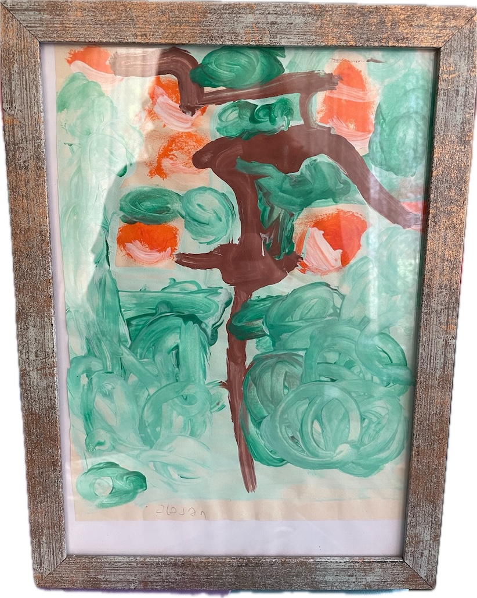
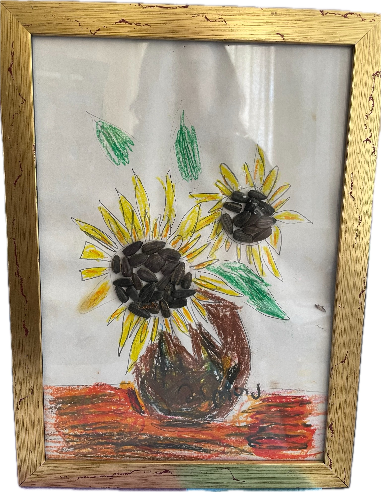
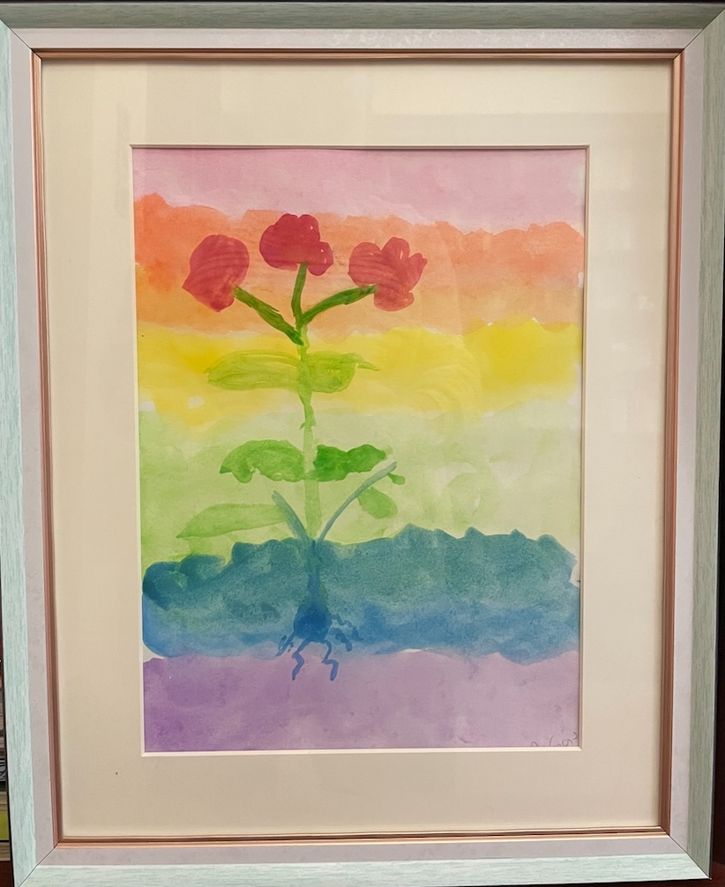
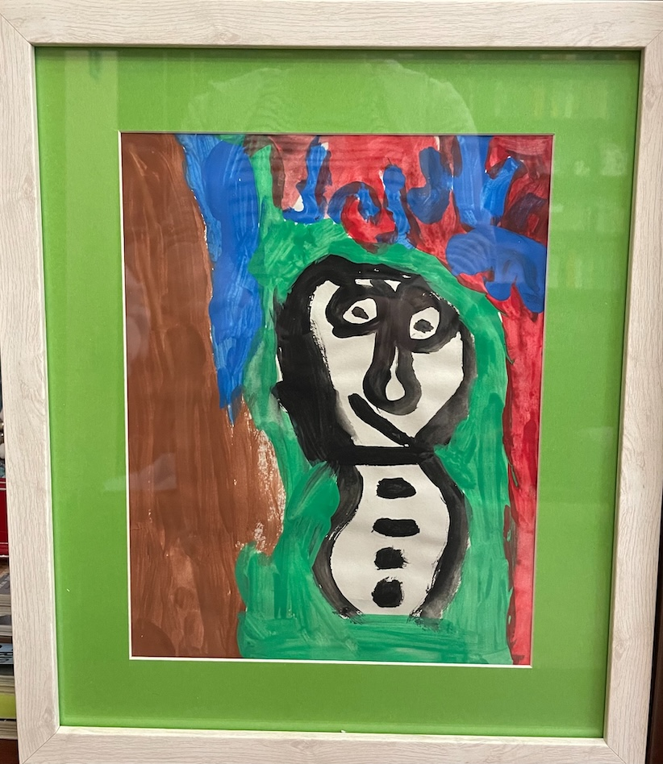

This space is born from love, devotion, and an eternal bond. It is dedicated to my sweet, blissful, strong-minded, and deeply artistic daughter, Martha — eternally in our hearts, eternally unattainable, eternally 8 years old. She left behind a world of inspiration which lives on in every piece I create.


Her sense of color, shape, and beauty ran deep. Her drawings, her crafts, her playful eye — all were inimitable. Yet, with her spirit in mind, I dare and try.

This space isn’t about perfection. It’s about imagination, joy and simple forms that radiate warmth, color and comfort. It’s a little handmade world, simple and sincere, that speaks to that childlike sense of wonder.

Every piece in mARTa is crafted with care, heart and a spark of childhood magic. From Christmas trees in every shape and form, to vibrant flowers, to cute animals with playful details — her legacy radiates in every handmade piece that now takes shape.